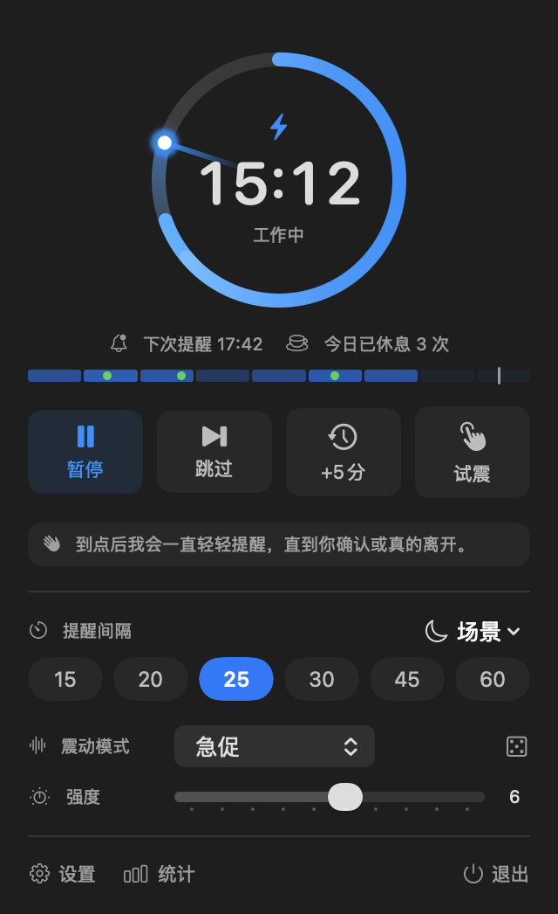
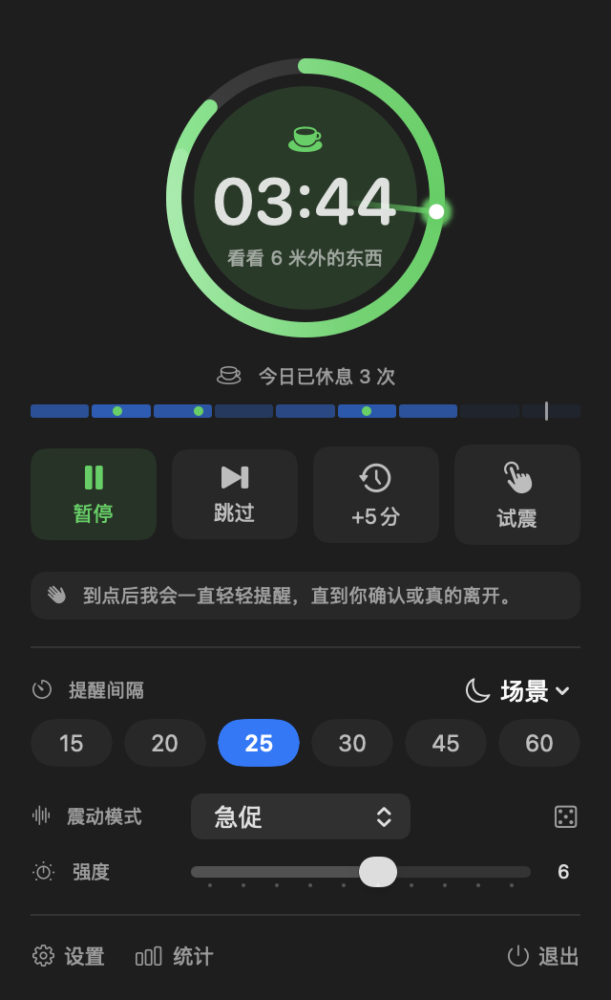
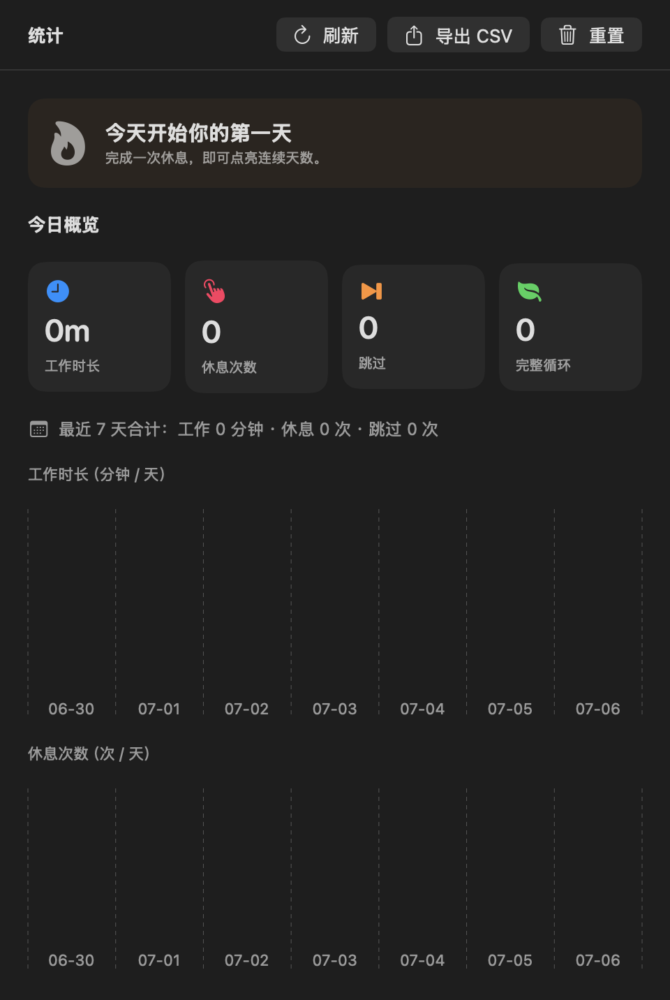
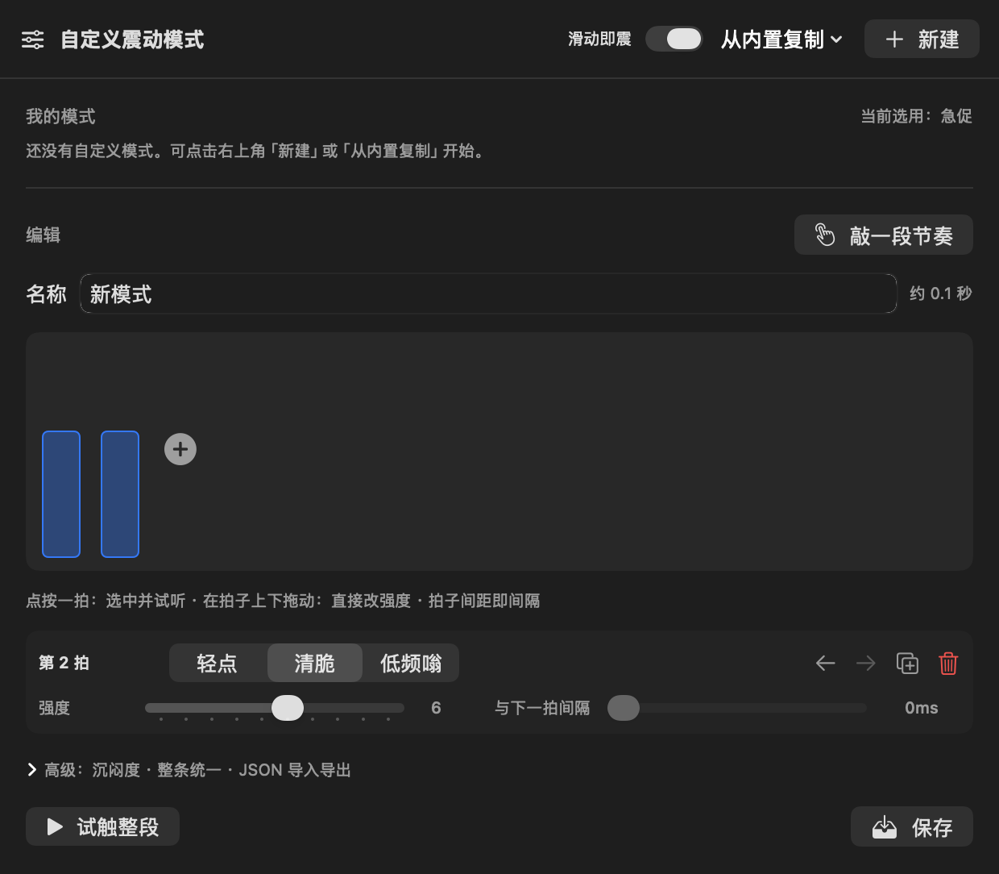

能被你摸到的
休息提醒
不弹窗、不出声、不遮屏。到点时，HapticBreak 用触摸板在你手心轻轻拍一下——你收到了，世界没被打扰，心流一次都不断。
别的提醒都在跟你的注意力抢工作
自 2015 年起，每块 MacBook 触摸板下都压着一颗 Taptic Engine——一个能被软件精确控制的震动马达，就在你此刻搭着的手腕正下方。HapticBreak 用的就是这条一直都在、却没人用的通道。
全屏遮罩
强行霸占屏幕，把你从状态里硬拽出来。HapticBreak 一个像素都不占。
系统通知
一眼就滑走，一开专注模式还被静音。震动不经过通知中心，专注模式反而是它的暂停信号。
声音提醒
开会、图书馆、开放工位……社死现场。震动只有你的手心知道。
光凭手心的拍子，你就能哼出调
29 种内置模式，其中一批是中美欧日都从小听到大的经典动机。点下面任何一个——身后的粒子地板会用 App 里一模一样的节奏数据震给你看。
一枚菜单栏图标，一个会呼吸的圆环
能量按秒释放的倒计时环、诚实的休息统计、随手能编的节奏画布。会议、全屏、勿扰、离开——都自动暂停，并把原因说给你听。




提醒到确认为止，统计到诚实为止
确认为止的轻推
到点先完整震一遍，之后每 20 秒短促轻点一下。三指三击、快捷键、点环、或者干脆起身走开 30 秒——都算确认。几次没回应就静默推迟，绝不无休止纠缠。
懂事的自动暂停
开会（麦克风占用）、全屏演示、专注模式、临时走开——自动暂停并告诉你原因和何时回来。打字打到一半？等你敲完这段再震。
诚实的统计
提醒响了不算数，你真的离开了才记一次休息。7 天图表、连续天数、CSV 导出——数据是你的。
一条命令，或一次拖拽
$ brew tap tmpbin/tap $ brew install --cask --no-quarantine hapticbreak
以后升级只需 brew upgrade --cask hapticbreak；应用内也会自动静默升级。
# 下载 .dmg，拖进「应用程序」，然后放行一次：
$ xattr -dr com.apple.quarantine /Applications/HapticBreak.app
未公证版本首次运行会被 Gatekeeper 拦下（提示「已损坏」——应用没坏，这是 macOS 对未公证下载的默认态度）。上面一条命令，或右键 → 打开，仅需一次。